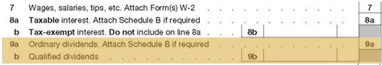
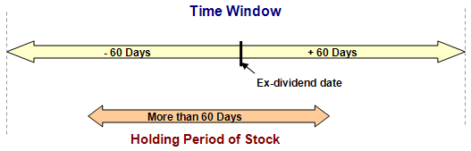

Ordinary and Qualified Dividends
 Ordinary dividends are entered on line 9a of Form 1040.
The distinction between ordinary dividends (taxed at ordinary income tax rates of up to 39.6%) and qualified dividends (taxed at a maximum of 20%) is of vital importance for any client receiving significant dividend income. Qualified dividend rates in 2016 follow:
20% - if the taxpayer is in the top ordinary income tax bracket of 39.6%
15% - if the taxpayer's ordinary income tax bracket is lower than 39.6% and higher than 15%
0% - if the taxpayer's ordinary income tax bracket is 15% or less
While qualified dividends are included in line 9(a), note that they are segregated out on line 9(b) to facilitate identifying them and applying the lower rate when it comes time to compute the tax.
To qualify for this special tax rate as a qualified dividend, the following conditions must be met:
The dividends must have been paid by a U.S. corporation or a qualified foreign corporation.
The dividends are not of type listed by the IRS as "dividends that are not qualified dividends." This includes dividends that are:
Capital gain distributions
Dividends paid on deposits paid by banks and savings and loans (these amounts are reported as interest)
Dividends from tax-exempt organizations or a farmer's cooperative.
Dividends paid by a corporation on employer securities that are held through an employee stock ownership plan (ESOP) maintained by that organization
The taxpayer must meet the holding period described below.
Click the icon to learn more about holding period.
Holding Period
As the preceding conditions show, most domestic stock dividends are potentially qualified. But before they can be designated as such, the taxpayer must meet the holding period requirement. To determine if a taxpayer meets the holding period requirement, look within the window of time 60 days before and 60 days after the ex-dividend date. If the stock was held for more than 60 days within that 121-day window, then it meets the holding period to qualify for the lower taxation.*

*Note, however, that when dealing with dividends on preferred stock, you must have held the stock for more than 90 days during the 181-day period that begins 90 days before the ex-dividend date if the dividends are attributable to periods totaling more than 366 days.